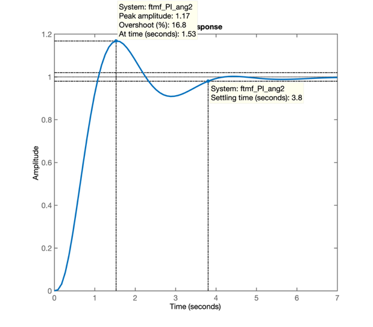

Aula de 20/05/2020
Retomando os trabalhos da aula passada (aula de 13/05/2020; gravada na pasta: /Documentos/MATLAB/aula_13_05_2020) e assumindo que você "partiu" o Matlab à partir do seu diretório padrão \Documentos\MATLAB\, fazemos:
>> cd aula_13_05_2020 % chaveamos Matlab para pasta da aula de 13/05/2020
>> load dados % ou load planta - para recuperar dados da aula passada
>> % Porém vamos gravar os dados desta aula em outro diretório:
>> cd .. % instrui Matlab para retroceder para diretório anterior, no caso \Documentos\Matlab\
>> mkdir aula_20_05_2020 % instrui Matlab para criar o subdiretorio:
>> % \aula_20_05_2020 à partir do diretório atual
>> save dados % salvando dados nesta nova pasta, apenas como garantia
>> Agora podemos continuar os trabalhos do ponto em que paramos na aula passada.
Lembrando da resposta ao degrau para Controlador Proporcional:
>> zpk(G)
ans =
1
------------------
(s+10) (s+2) (s+1)
Continuous-time zero/pole/gain model.
>> step(ftmf_Kp)Surge o seguinte gráfico:
Percebemos um tempo de assentamento \(t_s=3,28\) segundos.
Note que não é possível especificar um controlador com ação integral capaz de atender a um tempo de assentamento inferior ao encontrado para o Controlador Proporcional.
Obs.: caso o projetista tente projetar um PI com \(t_s<3,28\), (mesmo usando contribuição angular), vai acabar encontrando um zero instável, que implica que o sistema a médio e longo prazo se torne instável.
Como exercício: tente projetar um PI (usando contribuição angular) para tentar atender aos seguintes requisitos de controle: \(\%OS<20\%\) e \(t_s<3,2\) segundos.
Mas idéia nesta aula é determinar o local do zero do PI usando o método de contribuição angular ao invés de realizar um "chute científico" (Opções 1, 2, 3 e 4).
Neste caso, manteremos \(\%OS=20\%\) (usados nas aulas anteriores) e vamos especificar: \(t_s \le 4\) (segundos):
>> ts_d=4; % valor desejado para tempo de assentamento
>> zeta % fator de amortecimento calculado e usado em aulas anteriores
zeta =
0.4559
>> OS
OS =
20
>> % Calculando freq. natural de oscilação p/sistema subamortecido
>> % com %OS=20% e ts=4 segundos
>> wn=4/(zeta*ts_d)
wn =
2.1932
>> % Calculando parte imaginária do pólo de MF desejado
>> wd=wn*sqrt(1-zeta^2)
wd =
1.9520
>> % Calculando parte real do pólo de MF desejado
>> sigma=wn*zeta
sigma =
1.0000
>> % Montando um vetor com dados para polos de MF desejados
>> polos_MFd=[-sigma+i*wd -sigma-i*wd]
polos_MFd =
-1.0000 + 1.9520i -1.0000 - 1.9520i
>> % Montando equação auxiliar do PI (ainda sem o zero)
>> PI_aux=tf( [1], poly( [ 0 -1 -2 -10] ) );
>> zpk(PI_aux) % conferindo equação obtida
ans =
1
--------------------
s (s+10) (s+2) (s+1)
Continuous-time zero/pole/gain model.
>> % Usando Matlab para desenhar no plano-s os pólos e zeros de um sistema
>> figure; pzmap(PI_aux)
>> % Acrescentaremos no gráfico os pólos de MF desejados
>> hold on
>> plot(polos_MFd, 'm+')
>> % Notamos que se faz necessário "forçar" o Matlab para aumentar
>> % área usada para mostrar o gráfico completo de forma à incluir os
>> % pólos de MF deejados, que não estão aparecendo
>> axis( [ -12 1 -2.5 2.5] )O seguinte gráfico deve ser obtido:
Necessitamos proceder agora com o cálculo dos ângulos formados pelos pólos (e zeros, se houvessem) de MA do sistema com a posição desejada para o pólo de MF:

Calculando os ângulos:
>> th1=atan2(wd, -sigma) % gera valor em radianos
th1 =
2.0442
>> th1_deg=th1*180/pi % convertendo de radianos para graus
th1_deg =
117.1261
>> th2=pi/2 % Este não é necessário calular \theta_2=90^o
th2 =
1.5708
>> th3=atan2(wd, 1);
>> th3_deg=th3*180/pi
th3_deg =
62.8739
>> th4=atan2(wd, 9)
th4 =
0.2136
>> th4_deg=th4*180/pi
th4_deg =
12.2372
>> % Realizando somatório dos ângulos formados pelos pólos da nossa FTMA(s)
>> sum_th_polos=th1+th2+th3+th4
sum_th_polos =
4.9260
>> sum_th_polos_deg=sum_th_polos*180/pi % valor em graus
sum_th_polos_deg =
282.2372Lembrando da regra básica do RL que define quando um ponto pertence à uma curva no RL:
\[ \begin{array}{rcl} \angle \, FTMA(s) &=& \pm 180^o \, (2k+1) \qquad (k \ge 0)\\ \angle \, C(s) \cdot G(s) \cdot \underbrace{H(s)}_{\text{Realimentação não unitária}} &=& \pm 180^o \, (2k+1)\\ \sum_m \theta_{\text{Zeros}} - \sum_n \theta_{\text{Pólos}} &=& \pm 180^o \, (2k+1)\\ \end{array} \]
No caso deste controlador faremos:
\[ \theta_{\text{Zero}}= 180^o (2\underbrace{k}_{=0}+1) + \sum_n \theta_{\text{Pólos}} \]
>> % Lembrar que Matlab trabalha em radianos e não em graus
>> th_zero=pi+sum_th_polos
th_zero =
8.0676
>> th_zero_deg=th_zero*180/pi % valor em graus
th_zero_deg =
462.2372
>> % ou:
>> th_zero_deg-360
ans =
102.2372Ou seja, o ângulo formado pelo zero para que o RL passe sobre os pólos de MF desejados é de: \(\theta_{\text{Zero}}=102,24^o\), ou no plano-s fica:

>> % Aplicando definição de tangente para calcular posição do zero
>> % tan(theta)=co/ca ou tan(theta)=y/x
>> delta_x=wd/tan(th_zero)
delta_x =
-0.4234
>> % Calculando posição do zero:
>> zero_PI= -sigma - delta_x
zero_PI =
-0.5766
>> % Zero localizado em s = -0,5766
>> % Completando a equação do PI por contribuição angular
>> PI_ang=tf( [1 -zero_PI], [1 0 ] )
PI_ang =
s + 0.5766
----------
s
Continuous-time transfer function.
>> % Considerando eq. deste PI na FTMA(s):
>> ftma_PI_ang=PI_ang*G;
zpk(ftma_PI_ang)
ans =
(s+0.5766)
--------------------
s (s+10) (s+2) (s+1)
Continuous-time zero/pole/gain model.
>> % confirmando como ficou o RL:
>> figure; rlocus(ftma_PI_ang)
>> axis( [ -12 1 -2.5 2.5] ) % ajustando área desejada para o gráfico
>> hold on
>> plot(polos_MFd, 'm+') % sobrepondo no RL os pólos de MF desejados
>> sgrid(zeta, wn) % sobrepondo linhas guia para zeta e wn
>> wn
wn =
2.1932
>> % Determinando ganho do controlador para este ponto no RL:
>> [K_PI_ang, polos_MF]=rlocfind(ftma_PI_ang)
Select a point in the graphics window
selected_point =
-0.9793 + 1.9690i
K_PI_ang =
44.1212
polos_MF =
-10.5147 + 0.0000i
-0.9948 + 1.9729i
-0.9948 - 1.9729i
-0.4956 + 0.0000i
>>O que resulta no gráfico:
Fechando a malha com o ganho anteriormente encontrado e verificando resposta à entrada degrau:
>> ftmf_PI_ang=feedback(K_PI_ang*ftma_PI_ang, 1);
>> figure; step(ftmf_PI_ang)
>> 
Notamos que \(t_s \ne 4\) ou mesmo que \(t_s > 4,0\), mas note também que \(\%OS<20\%\).
O controlador projetado desta forma não atendeu 100% dos requisitos de controle desejados mas por motivos fáceis de explicar. Note:
rlocfind()) é o que "atrasa" a resposta alcançada pelo par de pólos complexos em MF (\(s=-0,9948 \pm j1,9729\) para malha fechada com \(K\_PI\_ang = 44,1212\)).DE fato, aumentando-se o ganho do controlador de \(K\_PI\_ang=44,1212\) para \(K\_PI\_ang2=55\), podemos verificar se a última hipótese pode ser atendida:
>> K_PI_ang2=55;
>> ftmf_PI_ang2=feedback(K_PI_ang2*ftma_PI_ang, 1); % fechando malha com este ganho
>> figure; step(ftmf_PI_ang2)
>> E se obtêm a seguinte resposta ao degrau:

ou seja, sem muitas tentativas e erros (processo que pode demandar muito tempo), este novo valor de ganho permitiu até um \(t_s<4,0\) sengudos. E ainda se pode aumentar mais o ganho porque o sobresinal atingido ainda está abaixo do máximo especificado.
Podemos comparar a atuação dos 3 ultimos controladores principais: Proporcional, PI (1a-versão) e PI_ang2 (com ganho aumentado):
>> figure; step(ftmf_Kp, ftmf_PI, ftmf_PI_ang2)E a seguinte figura é obtida:

Comentários:
Por fim, é bom lembrar que o circuito eletrônico capaz de realizar um controlador com ação integral (pólo na origem do plano-s), exige um uso de uma rede ativa, isto é, ingresso de energia no controlador e uso de "modernos" amplificadores operacionais.
Nos casos em que não se exige pólo do controlador exatamente sobre a origem do plano-s (não se exige ação realmente intetral) mas próximo ao mesmo, deixamos de realizar um controlador com ação integral e passamos à realizar um controador chamado de Controlador por Atraso de Fase (ou Lag).
Quanto mais próximo da origem, estiver o pólo deste controlador, mais o mesmo se comportará de maneira semalhante a um integrador, e isto quer dizer, menor será o erro de regime permanante. Mas não haverá, com este controlador, como zerar o erro de regime permanente.
De resto, o projeto deste controlador é semalhante ao de um controlador PI, onde normalmetne o zero do mesmo, fica o mais próximo possível do pólo mais lento da planta à ser controlada.
Controladores por atraso de fase com ganho \(<1\) podem ser realizados na prática, apenas fazendo uso de uma rede RC (uma rede passiva, que não exige ingresso extra de energia para funcionar).
Realizando o projeto deste controlador para a planta sendo adotada em sala de aula:
>> Lag1=tf( [1 0.9], [1 0.1] )
Lag1 =
s + 0.9
-------
s + 0.1
Continuous-time transfer function.
>> ftma_Lag1=Lag1*G;
>> zpk(ftma_Lag1) % apenas para verificar posições dos pólos e zeros
ans =
(s+0.9)
--------------------------
(s+10) (s+2) (s+1) (s+0.1)
Continuous-time zero/pole/gain model.
>> figure; rlocus(ftma_Lag1)
>> hold on;
>> sgrid(zeta,0)
>> plot(polos_MFd, 'm+')
>> [K_Lag1,polosMF]=rlocfind(ftma_Lag1)
Select a point in the graphics window
selected_point
-0.8916 + 1.7843i
K_Lag1 =
38.1273
polosMF =
-10.4414 + 0.0000i
-0.8925 + 1.7845i
-0.8925 - 1.7845i
-0.8736 + 0.0000i
>>O RL deste controlador é mostrado na próxima figura:
Fechando a malha e verificando resposta ao degrau:
>> ftmf_Lag1=feedback(K_Lag1*ftma_Lag1, 1);
>> figure; step(ftmf_Lag1)Note que para este controlador, depois de atribuída uma posição para seu pólo, o seu zero poderia ter sido calculado com precisão usando o método da contribuição angular. Mas neste caso, foi desejado realizar um projeto rápido com base na teoria já observada no decorrer do curso.
Podemos comparar a resposta deste controlador com o de outros projetados anteriormente:
>> figure; step(ftmf_Kp, ftmf_PI, ftmf_Lag1)Que gera a seguinte figura:
Note o erro de regime permanete do Lag1: \(e(\infty)=5,5\%\):
>> dcgain(ftmf_Lag1) % calculando y(\infty)
ans =
0.9449
>> erro_Lag1=(1-dcgain(ftmf_Lag1)/1)*100
erro_Lag1 =
5.5074Por fim, não se esqueça de ao final da aula, ou de uma seção de trabalho no Matlab, antes de sair do mesmo, fazer:
>> save dados
>> save planta
>> diary offProf. Fernando Passold, em 20/05/2020